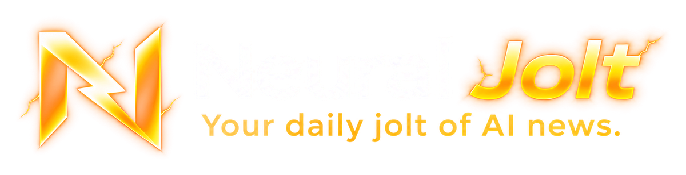

AI news, fast. Tested on screen.
Neural Jolt is an English YouTube channel about the AI news that matters: new models, features and updates from ChatGPT (OpenAI), Claude (Anthropic), Gemini (Google), Grok (xAI) and the other big AI tools. When something can be tested, we test it on screen, so you see what it really does.
New AI Shorts every day, plus deep-dives and model tests every week.
Neural Jolt Publisher
Neural Jolt Publisher is the private tool we use to publish on our own YouTube channel. It runs on our computer and uses the YouTube Data API to upload our videos and to set their title, description, tags, thumbnail, captions, playlist and publishing schedule, and to keep our channel's description, keywords and banner up to date.
It is not a public service: only the Neural Jolt team uses it, only on the Neural Jolt channel, and it never accesses anyone else's account or data. How it handles data is explained in our Privacy Policy; its use is covered by our Terms of Service.